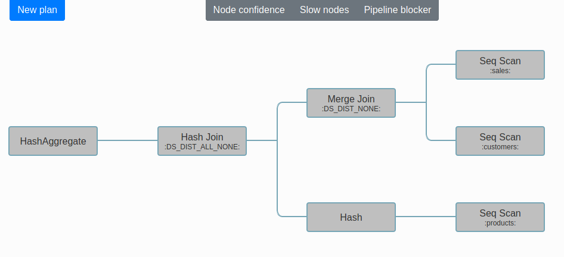
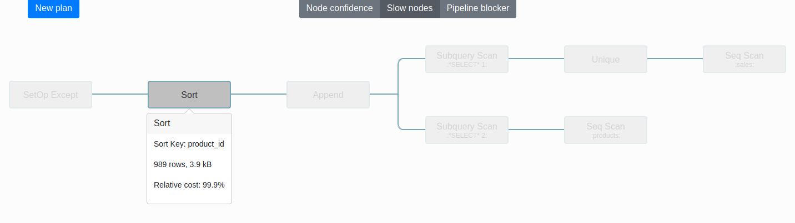

Visualize Redshift Query Plans
Add a new query plan

Paste your query plan or choose one of the examples.
Visualize the plan
A tree display of the plan will be generated.
Analyze the plan
Highlight which parts of the plan are the bottleneck of the query.